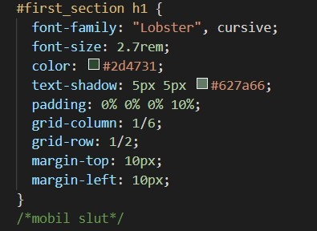
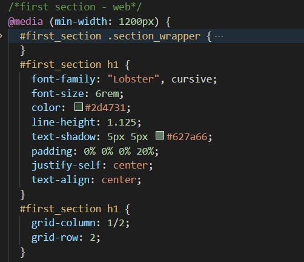

I Tema 2, Grundlæggende web blev vi præsenteret for nogle af de mest anvendte redskaber for en multimediedesigner. Vi blev introduceret til grundlæggende faglige begreber inden for design af digitale brugergrænseflader, digital indholdsproduktion, digital kommunikation og responsivt webdesign.
Vi lærte de basale byggeklodser til at opsætte en webside i html og css. Vi stiftede bekendtskab med billede behandling i Photoshop og opsætning af indhold i Adobe XD.
I opgaven responsive_site_v2 skulle vi kode en hjemme side i html og css ud fra en udleveret wireframe og tildelt stilart. Her startede vi med i grupper at researche den tildelte stil. Dette gjorde vi bl.a. ved at undersøge andre hjemmesider der anvendte stilarten og læse forskellige artikler om stilenarten. Vi sluttede researchfasen af med en stilarts pitch for vores medstuderende og lærere.
Moodboard
Efter researchfasen lavede jeg et moodboard. Moodboardet er en del af idegeneringsprocessen, som hjælper med at skabe en stemning for det projekt man skal igang med. Det beskriver stilen og den visuelle tone. Der kan være alt fra fotostil, fonte, farver, tekstur og lign. på et moodboard
Styletile
Vi lærte at lave et styletile, her skulle vi finde en hjemmeside med den samme designstil som gruppen havde fået tildelt. Derefter skulle vi i Adobe XD lave styletilet med de fonte, farver, ui-elementer og illustration/fotostil som hjemmesiden anvendte. Senere hen i forløbet kodet vi også et stylestile for vores egen hjemmeside i html og css.
Mock-up og wireframe
Wireframes bruges til at skabe overblik over websitets struktur og indhold. Det kan hjælpe til med at holde fokus på det grundlæggende layout, og altid med brugeren i mente, så du får lavet den bedste oplevelse for brugerne. Når du har den grundlæggende struktur for din hjemmeside på plads, kan man derefter begynde på sit mock-up. Der er altså ikke noget indhold i wireframe, det er en skabelon til hvor du skal placere indholdet.
I Adobe XD lavede vi et mock-up ud fra den tildelte wireframe. Mock-up er mere detaljeret end en wireframe, da du her indsætter alt indholdet til siden. Det kan være overskrifter, brødtekst og billeder. Man kan også tilføje design valg, f.eks. hvilken farve man vil bruge til baggrunden eller overskrifterne. Mock-up hjælper dig til at visualisere hvordan det endelige produkt skal se ud. I vores eget mock-up havde vi dog kun indholdet med og ikke det visuelle udtryk.
Inden man begynder at kode sin hjemmeside, kan man lave et layout diagram. Dette hjælper med at overholde den struktur du har lavet i dit wireframe og/eller mock-up. I ens layoutdiagram tilføjer man HTML-elementer og navnen på de "id'er" og "classes" der er tildelt til elementerne. Men kan f.eks. give grid-elementerne og flex-elementer hver sin farve i diagrammet. På denne måde kan man hurtigt skabe sig et overblik når man går i gang med at kode hjemmesiden i HTML og CSS.
Internettet er bygget op 3 kodesprog, hvor et af dem kaldes for html, som er en forkortelse for HyperText Markup Language. HTML bruges til at strukturere indholdet på en hjemmeside. Det gør man ved hjælp af en lang række HTML-elementer. HTML-elementer består af tags, der vil altid være et start tag og et slut tag. Det der står i mellem start- og slut tag, tekst eller anden data, er det indhold der kommer frem på hjemmesiden og vil blive behandlet i henhold til hvad de forskellige tags betydning er.
F.eks. h1 tagget gør at du kan lave en overskrift på din hjemmeside, h1 er den øverste i hierarkiet af overskrifter – derfor vil denne være den ”vigtigste” og bliver som regel ikke brugt mere end 1 gang pr. html side eller kun på index siden. Et element kan også have tilhørende attributter, som afgør hvordan elementet skal behandles. Nogle attributter globale og mens andre kun kan bruges på specifikke elementer. F.eks. er "Id" og "Class" globale, hvor "src" og "alt" f.eks. godt kan bruge når der skal indsættes et billede, så kan det ikke bruges til en paragraf.
CSS
CSS er en forkortelse for Cascading Style Sheets. CSS bruges til at definere layoutet på dine HTML-sider og style det visuelle udtryk på ens hjemmeside. Man linker så sin CSS fil til sit HTML dokument(er) i head tagget. På denne måde kan man nemt ændre farver, fonte, grid og andre visuelle elementer på hele ens hjemmeside. Man kan tage fat i de forskellige HTML tags og style dem, f.eks. ens ”h1’er” eller paragrafs. Hvis man ønsker at ændre kun én bestemt paragraf kan man give denne et ”Id” eller en ”Class” i start tagget. I ens css dokument tager man så fat i det navn man har givet ”id/class”, og på den måde ændre man kun de valgte elementer. ”Id’et” er højere i hierarkiet end ”Class”- så hvis der er et element som både et ”id” og ”class” peger på, vil det altid være id’et der vinder.
Responsivt design
For at lave et responsivt webdesign startede jeg med at lave mobil verisonen - mobil first. Her opsatte jeg strukturen i HTML, altså rækkefølgen indholdet skal være i i mobil verisonen. Efterfølgende brugte jeg "media queries" i CSS til at style de forskellige elementer. Det kunne f.eks. være min "h1'er", hvor størrelsen på fonten skal vokse i takt med at jeg udvider vinduet. Man kan anvende lige så mange "media queries" som man ønsker.

mobilfirstWeb versionen
Her fotæller jeg altså dokumentet at når vinduet når en specifik størrelse (i det her tilfælde minimum 1200px) at så skal font størrelsen skifte til 6rem på min h1'er